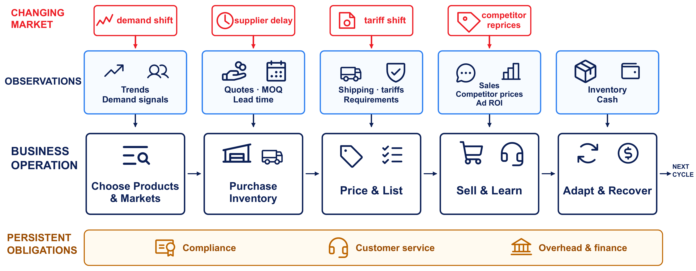

01研究背景与问题定义
经营一家商店，需要先判断机会、投入资金，再等待采购、物流和销售的后果。一次定价算对、一次客服回复流畅，并不意味着整门生意能够持续赚钱。Business Arena 把这些环节放进同一个持续市场，评价智能体能否在信息不完整、反馈延迟和规则变化下，协调资本、库存、销售与合规。
研究对象：跨环节、跨时间的经营决策
商业任务的困难不只在工具多，而在于决策相互约束。采购会占用现金，现金不足会限制补货；低价可能提高销量，却在运费和关税后变成亏损；识别到监管要求，如果没有完成申请和等待审批，也不能安全开售。最终结果取决于这些选择能否在时间上配合，而非某个孤立动作的正确率。
| 商业困难 | 对连续决策的影响 | 环境中的实现 |
|---|---|---|
| 证据不完整且有噪声 | 不能直接读取真实需求，必须判断信息是否足够行动。 | 公开需求线索、趋势、节日、市场事件及实际销售反馈。 |
| 收益延迟兑现 | 眼前现金或订单量不能代表最终价值。 | 资金占用、物流、应收、库存费与期末折价。 |
| 市场持续变化 | 早先合理的计划会随竞争、成本与政策变化失效。 | 自主竞争者、价格与需求变化、运输和关税冲击。 |
| 义务不能暂停 | 忽略客服、审批和运营费用，可能抹去销售收益。 | 市场准入、买家交互、罚款及持续经营成本。 |
核心创新：让经营结果可比较，也能被拆解
论文不是提出一个新的经营智能体，而是构造评测基础设施：真实商业资料为供应和市场条件提供依据，受控仿真承接可重复的经济后果，开放工具与工作区允许智能体编写自己的分析和经营程序。真实资料并不等于真实交易，市场机制仍是作者设计的抽象。
另一半贡献是诊断链。期末净值给出总体结果，细分指标展示经营方式，账本追踪把损益连到动作；若要比较替代决策，系统还要同时恢复上下文、工作区和市场状态。从“谁赚得多”推进到“为什么、在哪里做得不同”，要求这几层证据分开成立。
02方法与技术路线
评测由两层组成：内层是智能体与市场的连续交互，外层读取经营结果、行为记录和可恢复状态进行诊断。市场内部状态对被测智能体隐藏；评测器能保存状态，不意味着智能体可以读取隐藏需求或模拟器代码。
观察与形成经营判断
查需求、报价、成本和责任；在自己的工作区保存分析、脚本与计划。
公开工具执行
采购、定价、客服、合规与融资进入同一市场机制；产生可追踪状态变化。
市场自主推进
买家购买、竞争者调整、物流进展、供应变化、费用扣除与新事件，共同形成下一日状态。
结果与机会
净值＋使用公开信息的专家策略参照。
行为与损益
细分指标＋证据—动作—经济后果追踪。
联合状态恢复
上下文＋工作区＋市场检查点，支持替代续跑。
论文原始市场运行图 · 点击对照

Episode Lifecycle：经营日由智能体推进，世界持续保留后果
每次评测先有开店准备，再运行 30 个模拟经营日。准备期可以选择品类与初始组合，也可以保留资金；初始采购在第 0 日即可使用，避免所有策略都先承担不可避免的运输等待。之后，智能体在一天内可以多次查信息和行动，直到自行调用 end_round 才推进一天。
这不是每天由评测器重新发一条提示的独立任务。智能体连续运行，保留自己的文件和程序；结束一天后，竞争、需求、物流与财务一起更新，再影响下一天的可行选择。采购错误会占用后续资金，库存与资格状态也不会因为换一轮对话而消失，这正是长程依赖的来源。
接口既提供逐个调用的类型化 MCP 工具，也提供可脚本化的后端能力；两种入口调用同一市场机制。智能体可以自行组合批量分析、调价或恢复流程，但仅在自己的低权限沙箱中读写和执行程序。市场服务用独立身份运行，代码、数据库和隐藏状态由权限隔离，避免把直接读取答案当成经营能力。
经济机制与结算：把局部动作变成有代价的承诺
公开信息有不同难度：节日提供较直接的时机线索，趋势需要从滞后的历史推断方向，市场传闻还要辨别真假。世界保留可供谨慎策略利用的证据，同时避免把真实需求直接交给模型。竞争者和供应条件继续变化，意味着收集过一次信息并不足够，计划必须用后续结果校准。
资金投入也不是无风险的搜索。每日固定费用和库存费惩罚闲置与积压，物流、关税和佣金影响真实利润，审批周期限制开售时间。融资、应收保理和清仓提供恢复途径，但都付出利息、折扣或损失。因此，评价的是有资源约束的适应，而非可以无限重试的最优动作选择。
这是论文的期末清算口径。未完成交易和滞销库存不能按名义价值计作无成本收益，负债也不能靠推迟付款消失。分数衡量该规则下的清算后资产，不是营业额、现金余额或真实市场估值。
机会参照与细分指标：解释相近净值背后的不同能力
开放商业环境没有唯一标准行动序列。论文用一组确定性的专家经营策略估计同一市场中可获得的机会；这些策略也只能使用智能体可见的信息。领先策略将需求与路线贡献的估计用于组合、补货、定价和资本再配置，提供可运行参照，但它仍不是全局最优解的证明。
| 层次 | 观测对象 | 用于解释 |
|---|---|---|
| 总体结果 | 清算后净值，以及重复运行的分布。 | 能否赚钱、是否保住本金，而非只挑一次最好结果。 |
| 经营方式 | 资本部署与周转、毛利与售罄、广告回报、客服、合规。 | 高收益是否掩盖某项责任不足；相近结果是否由不同策略产生。 |
| 动作追踪 | 证据、经营动作及其下游账本变化。 | 哪次成本估计、报价或服务行为与具体损益相连。 |
| 替代续跑 | 相同起点下替换动作、模型或参考策略。 | 改变选择以后，后续经营会怎样变化。 |
这些维度不能相互替代。例如，高毛利可能以较低售罄为代价，高客服转化也未必弥补糟糕的采购和资本配置。细分指标的价值是展示这种非一致性，而不是再造一个把所有维度加总的“全面能力”分数。
Save–Fork–Load：同一起点必须恢复三类状态
只保存市场数据库还不够。模型下一次会读到什么消息、工作区有哪些脚本和笔记，都可能改变后续选择。Business Arena 因而联合保存模型可见上下文、操作系统层面的工作区，以及精确的市场状态，再从同一检查点恢复多个续跑分支。
模型上下文
压缩后的确切消息、工具操作边界与模型／运行系统来源。
工作区
内容寻址归档的文件、笔记、代码与经营程序。
市场状态
事务一致的库存、订单、账户及其他世界状态。
续跑 A
保留原选择或策略，观察后续经营。
续跑 B
替换选择或策略，记录新的经济后果。
实现使用可检查内部状态的运行框架，并不要求逐比特恢复进程。恢复前校验内容，保证系统提示只安装一次，并在首次模型请求和工具发现之前重建续跑边界。其目的，是避免“同一市场”下却带着不同消息或脚本开始比较。
还要区分两种归因：账本能说明某笔损益如何发生，却未必说明若不做该动作会怎样；联合状态恢复才提供替换选择的实验条件。即便如此，若两个分支后来还改变了许多动作，结果差也属于整段续跑，不能自动归为某一次决定的纯因果效应。
03实验设计与结果分析
结果有多难，又是否足够稳定？
15 个前沿模型，在相同世界条件下各运行 10 次；初始资本 $80,000，模型使用各自最高思考设置。排名使用期末净值均值，并非等推理成本排名；下表只保留刻画差距与机会空间的结果。
| 观察 | 论文结果 | 解释 |
|---|---|---|
| 最高模型均值 | Gemini 3.1 Pro：$188,488 | 该世界下可获得显著经营收益。 |
| 最低模型均值 | MiniMax M2.5：$20,856 | 最高与最低模型均值相差约 9 倍。 |
| 最强专家策略 | $436,195 | 使用公开信息的参考策略仍提供较大改进空间。 |
| 所有运行中的亏损 | 51%；仅 4 个模型每次都保住本金 | 平均利润与可靠经营是两项要求。 |
这些结果同时建立难度和可达性：很多模型亏损，但同一世界中存在表现更好的可执行策略，低分不能简单解释为“环境无利可图”。十次均值的可靠性统计为 ICC=0.944；不重叠的五次子集排名相关为 ρ=0.898，支持该条件下的重复比较。不过，重复同一世界仍不同于跨新经济机制的泛化。
总体榜单也不覆盖所有能力。客服中，Opus 4.8 的询盘转化率为 84%，高于净值领先的 Gemini 3.1 Pro 的 57%，而论文认为前者的整体经营表现较弱。这说明“会回复买家”和“能协调完整生意”确实会分离，细分诊断有独立价值。
分数是否奖励了想测的经营能力？
机制有效性实验固定市场及其余经营策略，对比合理行为、忽略机制与误用机制。每行将两种负面对照中较强者设为零；数值是相对该行基线的期末净值变化，不是绝对利润。下表节选三项。
| 机制 | 合理策略 | 忽略机制 | 捷径或误用 |
|---|---|---|---|
| 采购组合 | 按证据选品：+$63.6k | 盲目批量采购：−$14.6k | 只买便宜 SKU：0 |
| 定价 | 覆盖完整成本：+$50.3k | 接近进货成本定价：−$58.1k | 极高加价：0 |
| 客服 | 依据买家与商品信息回复：+$5.6k | 忽略询盘：−$0.1k | 泛化模板回复：0 |
这组实验不是给模型排名添一张表，而是在检验构念：如果忽略完整成本和需求证据反而更赚钱，基准就可能奖励错误能力。所选机制中，预期的经营行为均优于忽略或误用，支持分数与设计目标一致。定价行也说明，不能把销量或加价率直接当经营质量。
边界在于这些是经营策略的受控变体，不是对每个被测模型做的组件消融；不同机制的金额也不能相加，因为基线与交互关系不同。采购和定价等金融对照使用 10 个种子，客服只用 3 个匹配世界。它们加强了环境内部的有效性，尚不能证明现实市场也具有相同收益排序。
恢复中间状态之后，为什么分支选得越勤未必越好？
附录的状态续跑案例使用 Qwen 3.8 Max Preview、同一世界和提示，总预算均为 180 个模型经营日。分支搜索保留 K=2 个状态，每个状态展开 M=3 条续跑。
| 分配方式 | 最终净值 | 比较含义 |
|---|---|---|
| 6 次独立运行，取最好 | $93,268 | 预算用于完整独立尝试。 |
| 每日分叉并选择 | $93,111 | 更频繁地用中间状态估值筛选分支。 |
| 每 5 日分叉并选择 | $108,878 | 较独立最好结果高 16.7%，较每日搜索高 16.9%。 |
可恢复性把推理扩展的单位从完整轨迹变成中间经营状态。这个案例中，五日间隔给物流、销售和周转更多时间显现，避免仅按眼前状态过早舍弃后劲较好的分支。它提供了延迟后果影响搜索选择的具体证据，但不能推导出“五日是一般最优间隔”。
第 25 日及以前使用检查点评估器的估值，第 30 日才是精确清算净值，中间估值误差可能与选择频率相互作用。相同模型经营日也不等于相同 token、墙钟时间或存储支出；恢复和分支管理成本未包含在这个单一预算单位中。因此该实验支持一种预算分配机会，而非完整的成本优势结论。
04贡献、局限与综合评价
核心贡献：把经营能力、世界机制与诊断工具连成证据链
| 贡献 | 值得保留的思想 | 支持范围 |
|---|---|---|
| 连续经营环境 | 让局部选择的资源占用和延迟后果进入同一持久世界。 | 覆盖跨境 B2B 商店的多环节决策，不涵盖全部商业或真实平台操作。 |
| 构念与行为诊断 | 同时看净值、经营责任与动作后果，而非只看单次最好收益。 | 机制对照和指标排名分离支持其内部解释力。 |
| 状态化评测 | 把难状态保存为可恢复测试起点，允许替代策略和续跑搜索。 | 已有受控案例，尚不是普遍成立的行动因果归因或最优搜索方案。 |
它最有价值的设计不是把工具数量堆到六十多个，而是让工具产生有共同经济约束的后果，再提供可重复观察和干预这些后果的条件。基准因此既能提出“能否持续经营”的问题，也能定位下一步该检查的决策环节。
现实资料提高相关性，仿真机制仍决定什么策略获胜
真实商品、供应和市场校准避免了完全任意的玩具世界，但需求生成、对手更新、罚款和清算折价仍由环境规则决定。机制消融证明预期能力在这套规则中有价值，不能单独证明模型掌握了对新制度也可靠的商业判断。固定世界中的稳定排名，同样可能包含对其特殊规律的适应。
更有区分力的验证是冻结智能体，在边际机会相近时改变需求响应、结算延迟或竞争者策略，并检查收益和行为排序是否稳定。若排名大幅变化，就应将结论限定为对某类市场机制的适应，而非广义经营智能。
行动追踪比终局评分细，但因果判断还需要干预约束
某次报价与一笔亏损相连，可能是成本漏算，也可能有更早的采购约束或后续市场变化。账本追踪能揭示实际链条，联合恢复能建立共同起点；若替换动作之后连未来策略也更换，差值仍属于整段政策变化。这会影响把诊断直接转成强化学习信用的做法。
可在同一快照下固定后续策略、配对重复续跑，只替换一个决策，检验归因方向是否稳定。它与普通轨迹回放的区别，在于真正比较同一条件下的替代后果，而不只是给已发生的故事找到合理解释。
利润、经营责任与生产环境执行是三个不同边界
经济惩罚能让部分合规失败进入净值，却不能把所有外部损害或长期信誉都折算进 30 日资产。论文的细分责任指标因此应与利润一起保留。真实部署还需要在变化的商店界面、邮箱和第三方系统中可靠执行；当前结构化接口把这些操作难度抽象掉，作者也将其列为局限。
综合判断是：Business Arena 为完整商业决策提供了有诊断分辨率的受控试验场，当前证据支持其难度、同世界重复比较和部分机制有效性。其更广泛价值取决于能否把状态恢复与机制变化用于更严格的泛化和干预测试；高净值本身，还不足以说明智能体已经能够可靠经营真实企业。